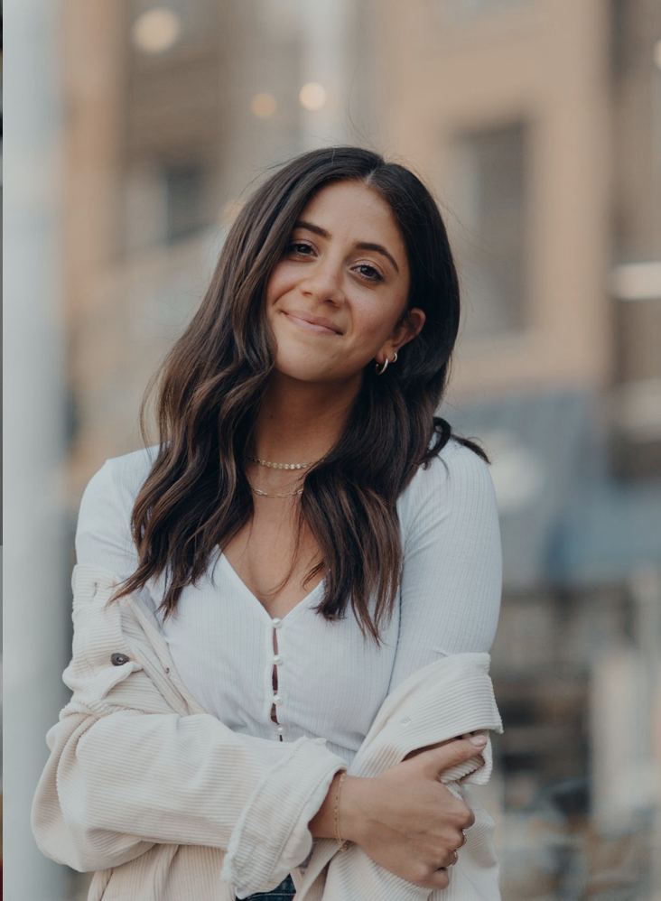

Gathered Nurtition
Created and lead by Mia Zarlengo, she is a registered dietitian, lover of all things food and nutrition, coffee obsessed, recipe developer based in Chicago. She focusses on creating accessible yet healthy recipes, finding simplicity in the kitchen, as well as topics on women’s hormonal health.
Check her out!